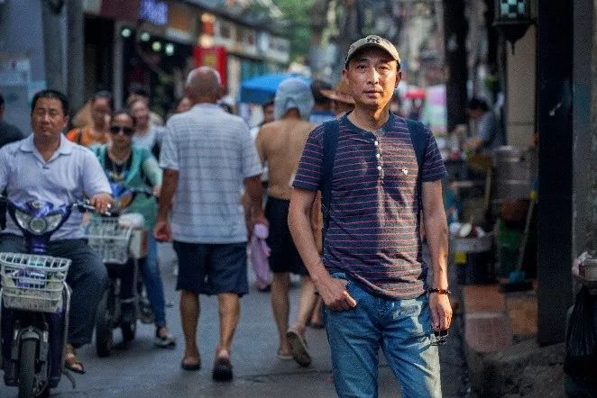
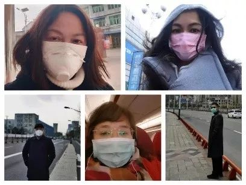
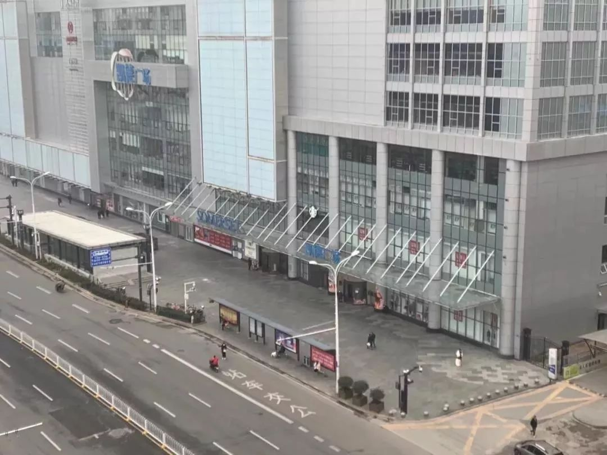
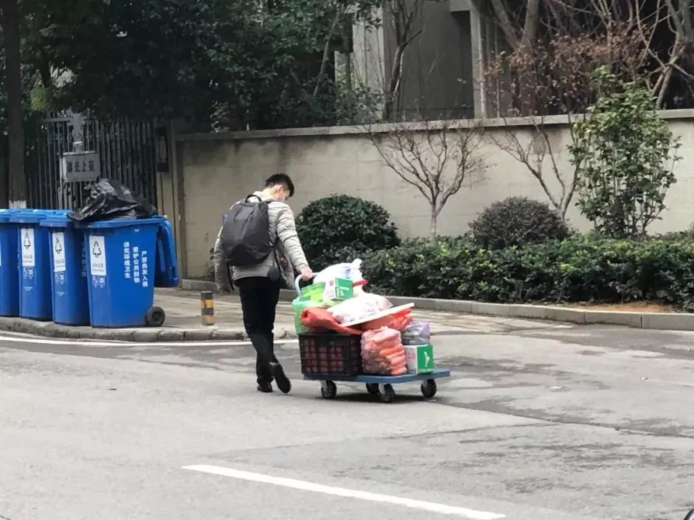
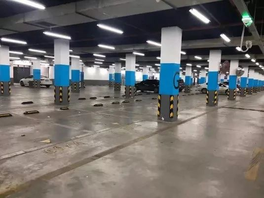

作家方方：武汉人爱武汉，爱得不由分说
原文链接 备份链接 _ _ _ _ 武汉这个地方，不南不北，所以他们会有北方人的蛮劲，也会有南方人的精明。喜欢过小日子。而且热爱武汉爱得不由分说，很多武汉人，是不容任何人说武汉一点不好的。 _ _ _ _ 记者 | …
_
_
_
_
这几天，有媒体称“风月同天”不如“武汉加油”，后被群嘲。因为它背后的逻辑，并不是在讨论“灾难当头可否允许诗意停留”，而是把诗意直接当作非日常的存在，好像感风吟月都是特殊的情绪仪式，平日里不好随意散发的，非得诗人摇起折扇才行——这种逻辑将诗意剔除于生活之外，但诗意本该是日常。
四处封城之下，我有所念人，隔在远远乡；
医生奔赴前线，市民投喂美食，这是投我以木瓜，报之以琼琚；
每一个变黑的数字背后，都有感时花溅泪，恨别鸟惊心。
当一句诗、一阕词在心头闪过，我们便仿佛相隔千年与故人心意相通、愁肠相诉。却有人居然觉得，写诗这件事文艺到配不上严肃的抗疫行动……
相比没文化这件事，我倒觉得“诗意还需要被人决定它的去留”更可怕。
相比没文化这件事，我还觉得看到几句诗就惊艳得不行最可怕，因为那等于在说：我们的生活已经离诗很远了。
想起曾经看到的一个高票问答，印象很深：
“我们为什么要读诗？”
“为了长大以后我们面对三千世界里的无数美景时，脑子里出现的不是‘我X’‘牛B’，而是‘落霞与孤鹜齐飞，秋水共长天一色’。”
来听听身处武汉的诗人小引怎么说——
_
_
_
_

小引：
男，1969年出生，现居武汉。著有诗集《北京时间》，《即兴曲》。散文集《悲伤省》，《世间所有的寂静 此刻都在这里》。
口述 | 小 引
整理 | 阿 布
我们有别的表达方式
我在武汉。今天是封城第二十二天。
这两天，因为日本友人捐赠援华物资的事情，闹得沸沸扬扬。有意思的是，舆论场的焦点并非是物资问题，而是包装盒上的几句唐诗。按照平常的想法，这事情类似于隔壁的人看你生病了，上门来送个花篮，水果，顺便写了拜帖，上面写了几句客气话。按照传统中国的习俗，礼尚往来，应该好烟好茶招待一下。
是什么让日本援华物资上出现那些感人的诗词？在我看来，无外乎是因为：灾难面前，日本人觉得中国应该还是那个中国。
我也在朋友圈中，表达了对看见几句唐诗就一窝蜂惊诧莫名的不满。许多人回帖，大多在谈中日两国文化的传承发展变化及差距。其中最精彩的一个回帖是南京作家曹宼说的：“问题是，我没觉得引用诗词就叫文化。但说中国人没文化大概也没问题，因为他们看到几句诗词都要惊艳。”
但似乎并不那么简单。
背几句唐诗并不说明谁有文化，谁没有文化，但是它在这个非常尴尬的时代中猛然让人想起，原来我们还有不被裹挟的别的表达方式，别的情感模式，别的思维路径。那是另外一个“不一样”的世界，它从汉唐宋元来，从浩荡的明月中来，从奔腾的江水中来，从无数中华文明的瑰宝中来，岂止是简单的四六句那么简单？
封城二十二天了，我们每个人的生活都发生了巨大的变化。我们看到了很多不幸，似乎再也不能像从前那样生活了。这才是困扰我们大家的一个共同问题。
灾难之后，写诗并非是野蛮的，用无耻的言论继续灾难才是野蛮的。而反抗这种野蛮的唯一办法，就是真实，持续且坚定的写作，唯有这样，才能让谎言失去生命，让真相挺身而出；唯有这样，才能让阳光透过雾霾，重新照亮那些干枯的花园，寂寥的人间。

武汉疫情爆发后，小引一直在征集“戴口罩的中国诗人”群像，这是他收集到的部分诗人照片。当诗人戴上口罩，你还能认出他们吗？
人类只能暂时臣服
封城二十多天，有点像自囚，终于把作息时间彻底颠倒了。特别是最近一周，已经可以通宵不睡，直到早上五点才困倦。一觉睡到中午十二点，武汉话叫“睡转了钟”。起来倒也不觉得昏沉，只是心生一丝奇怪的感觉，这是过年，也是避难，睁眼一看，窗外的天气无非三种：晴天，雨天和阴天。
我住的小区有4栋，每栋30层，每栋基本上都有几个确诊病人，保护隐私没有对外公布门牌号，居民大都关门闭户，不怎么出门。
小区在三所大学的包围圈内，平时永远是学生来来往往的热闹，一下子变得这么安静，感觉挺古怪的。我从没想过一座一千万人的城市会突然看不见人了——站在自家凉台上望出去，觉得自己也特别奇怪，有一种很不真实的感觉，但其实又是真的。
每天的伙食还是一个很大的消耗，身边的24小时便利店和大型商圈都关门了，但是超市还在坚持营业，武汉的盒马、武商超市，覆盖率比较高，可以方便地买到蔬果肉禽蛋和生活物资。
说段武汉话：_在支付宝里头找到了代购，买鸡蛋、米、油，下单，好几分钟冒的人接。加鸟十块钱，重新下单，这回蛮快，秒接。到楼下收快递小哥送来的代购物资，果然加了钱，服务好，速度快。别个规规矩矩，几多钱，包装得好好的，还怕您伢传染了，用个塑料袋包到把手送过来。小区大门口站到结账，我们两个人戴到口罩，相隔两米，旁边一个防化服物业，冷静地拿到测温枪瞄到我们。_我感觉有点像犯了点莫事情，到派出所的感觉。
二十多天除了出门买菜，就整天穿着秋衣秋裤在书房中转悠。把地暖打到50度了，还觉得不够，热烘烘的，据说病毒害怕这个——否则为什么到了五六月病毒就消失了？这当然是猜测，没有确认的科学依据。在武汉湿冷的冬天，900万人自我封闭二十多天，近乎于一项伟大的行为艺术。不过前提我要声明，并非所有的人都是主动自我封闭的，强烈度的传染疾病，让主动和被动在此刻消失了界限，这其实是臣服，人类在病毒面前，应该保持谦卑。
武汉现在就像是计算机关机了
武汉人一直都胆子挺大，今年元月初的时候大家还满不在乎，官方有万人宴，民间也到处都有封闭场馆里众人聚集的跨年庆贺活动。李文亮医生的消息传出后各路消息在民间也是满天飞，大家会互相提醒，但是因为没有官方认证，所以生活并没有发生变化。
封城的前几天我还在和朋友吃饭，一位朋友是医生，吃完饭第二天跟我们说，出事了，他一个同事发烧了，等着出检验结果，“如果他感染了，那我也要隔离了，你们也危险了。”我们和他一起等消息，等到8点，说没事了，警报解除——这个病毒不是直接判你死刑，但是永远在给你一种威慑，让你感觉离死亡很近。对于每一个没有被传染的人来说都是心理压力，很微妙。
今年原本打算去西藏过年，已经提前大半个月订好了机票，但是宣布“人传人”以后我就退票了，很快武汉就封城了——封城让我感到这次的情况非同一般，好像又来了一次非典。但武汉人对非典的记忆是不强烈的。刚开始封城的一段时间是大家最恐慌的时候，现在二十多天过去，变得有些麻木，900万人说不出门就不出门，病毒改变了我们的日常生活节奏，退化到最简单的起居、喂饱自己、睡足觉。
我一直在想一个问题：等病毒过去之后，我们还会像以前一样生活得肆无忌惮吗？这还不只是不接触野生动物的问题。像武汉这样的超大型城市，再加上越来越快捷的城际交通网络，病毒也坐上了高铁，去到了从前轻易到不了的地方。超大型城市对周边务工人员的无限吸纳，当灾难来临时也会直接变成病毒的吐纳。这让我想起早年的386计算机，如果中毒了没办法就只好断电、关机。武汉现在就像是计算机关机了，但我们不能永远这样，杀敌一万自损三千。
这次的病毒不仅仅是医学、科技面临的问题，也对现代文明的社会结构提出了新的课题——飞速发展的城市，如何分层防御？这也是社会学面临的问题——我们该如何更科学地构建社会结构？

汉口中山大道空荡荡，凯德广场冷冷清清

群光二路的囤货青年

汉口火车站地下停车场

价格不便宜，可是再贵也要买
那么我只好跳广场舞了
朋友圈中有许多自由散漫的人，我自己也是其中之一。我说的“自由散漫”是针对某些具体的、更自我的生活而言。比如昨天上午，五号艺术车间的老陈独自上街，拍摄空无一人的大街，他一边拍一边说，这里有1000万伏兵。我调侃他说，老陈你是一艘草船，如今终于可以随波逐流了。老陈回答我说，我是大雾，你是垛子，老方才是草船。他说的老方，就是“者名”酒吧的“者名”老板方文，疫情最严重的时候，他一个人跑去江滩踢足球，阳光灿烂，万里无云，天气好得让人有点不安，方文在空荡荡的江滩感叹：这真他妈的是浪费啊！
我有个朋友在派出所工作，方舱刚建好，要把各个社区的轻症患者转移过去。他的辖区大概转移了四五十人，各种思想工作，行李，手续，接送等等。好不容易把人送到了洪山体育馆，回到所里准备晚餐，忽然接到电话，说你们送来的人，跑了两个。
我那朋友没办法，重新披挂上阵，追索失踪感染人员，最后把人堵在了家里，问，你感染了进方舱，为什么要跑回家呢？答，那边太吵，睡不着。问，你回来不怕感染到家人吗？答，他们都欢迎我回来……一整天，十八个小时，十几个人的工作就消耗在人员转送之中。
我只是讲述这个故事，荒诞，但又真实，是简化版的《飞越疯人院》。像麦克·默菲·方文这样的人，如果你把他丢进方舱，他也会要求，方舱开一个酒吧病房，让我们喜欢喝酒的病友们在一起，相互照看，恢复得会更快一些。如果护士反对的话，麦克·默菲·方文会说，那么我只好跳广场舞了。
苍蝇神奇地消失了
下午偷偷下楼转了一圈，小区花园中静悄悄的，连个苍蝇都没有。我前几天就发现这个问题了，武汉疫情爆发以来，苍蝇神奇地消失了。我不知道汉口汉阳其他地方的朋友注意到这个问题没有？
站在干枯的喷水池旁抽烟，这拜占庭式的古罗马趣味，加上中国风的假山，没有水流经过，显得破旧，狭隘，毫无生气。隔壁一栋楼有我一个朋友，中午跟我有一句没一句地聊天，我猜，他是想跟我约在楼下花坛见面抽烟，我憋着没搭茬，心里想，两个被困在同一个小区的“麦克·默菲”是不应该见面的，我们可以像余则成那样，路过好像不认识，地下党应该讲规矩。否则每天火锅一炖，毛铺酒一开，哪里有点疫区人民的样子。
隔壁那栋楼的兄弟好像不依不饶，晚上又跟我发了一条微信——“每天下午和晚上，我和小吴都会在小区里散步，活动筋骨……”这是一个潜伏者的标配语言，下面就是接头暗语了。但我当时正在吃饭，没来得及回，我想，是应该下去跟他交换一下情报了，也不知道他家的物资储备足没有。
其实今天出了一趟门。老高说他的口罩消耗殆尽，只有最后两只了。恰好我这里有浙江诗人津渡以及另外两个朋友寄来的口罩，我说你正好过来盒马生鲜购物补仓，我跟你送过去。下午三点，老高在空旷的路口等我，我想既然出了门，干脆陪他去超市买点东西吧？虽然家里好像也不缺什么。
路过华师后门的酒吧街，那里已经空寂了一个月。精酿啤酒、羊蝎子、串串香、东北饺子馆、黄焖鸡米饭……想起其实每家老板都蛮可爱，熟悉了，这个可以打折，那个也可以打折，我有点担心这疫情时间太长了，恐怕中间很多人，就不会回来了。
两个人散步去盒马，碰见一群年轻人骑着自行车在街上溜达，我感慨一声，现在的孩子们胆子真不小。有个女孩骑车走在后面，回了我一句，我们没菜吃啦！嘻嘻哈哈，顺着下坡转眼就远去。
失联几十年，兄弟可重聚
诗人刘不伟下午在网上发了一个寻人启事，上面说，自己的大伯在武汉，90年代初见过一面，之后失联了26年，渺无音讯。这次武汉疫情举国震动，刘不伟的父亲年迈之际，思念自己的哥哥，嘱托不伟上网搜寻。
我把寻人消息发到同学群中，没想到天遂人愿，竟迅速得到了回应。他的大伯和我同学的父亲竟然是一个单位，且私交甚密，得此讯息，感涕欢喜。
据说这个世界上，任何一个陌生人只需要转三个弯，就会找到另外一个人，看来是真的。
不伟私下里跟我说，自己的父亲解放初在辽阳读书，大伯去了长春读书，后来兄弟离散，各奔东西，风云变幻之际，谁也不敢轻易联系对方。直到70年代末有过一次接触，90年代初又见过一次，然后再也没有了消息。
我理解那个时代中的个人命运，就如风吹落尘，洒满大地。到了垂暮之年，每个人都会思念起自己的故土和亲人，鞍山的春天，沈阳的夏天，刘不伟充满渴望地跟我描述自己父辈的情景，就像一部老电影中的慢镜头，好看又伤感。
这是灰暗冰凉的武汉疫情中温暖的一幕。岂曰无衣，与子同裳，说的大约就是这个意思。希望两位老人身体健康，希望他们能够在灾后的武汉相聚，就约在黄鹤楼下吧，大江东去，多少传奇，正在此刻的传奇。

征集令
《新民周刊》现面向全国征集新冠肺炎采访对象和真实故事：
如果你是参与抗击新冠肺炎疫情的医护人员或其家属，我们希望聆听你的“战疫”故事，也希望传达你的诉求。
如果你是确诊、疑似患者本人或家属，我们希望了解你和家人如何“抗疫”的过程，让外界了解你的真实经历。
如果你是疫情严重地区的普通市民，我们希望展现你的乐观，并倾听你所需的帮助。
如果你是公共服务人员或各类捐助者，我们希望看到你的“最美逆行”，记录下你的无私。
……
抗击新冠肺炎疫情，我们诚征对疫情了解的社会各界人士，提供相关线索，说出你的故事，让我们用新闻留存这一切。
《新民周刊》新冠肺炎线索征集值班编辑联系方式（添加时请简要自我介绍）：
周一：应 琛 微信号：paulineying0127
周二：金 姬 微信号：gepetta
周三：黄 祺 微信号：shewen-2020
周四：周 洁 微信号：asyouasyou
周五：孔冰欣 微信号：kbx875055141
周六：吴 雪 微信号：shyshine1105
周日：姜浩峰 微信号：jianggeladandong
新闻是历史的底稿，你们是历史的见证者。
期待你的故事、你的线索！

▼
大家还都在看这些
▼
转载请在评论区留言，获得授权！
转载时，须注明作者、出处和微信号


原文链接 备份链接 _ _ _ _ 武汉这个地方，不南不北，所以他们会有北方人的蛮劲，也会有南方人的精明。喜欢过小日子。而且热爱武汉爱得不由分说，很多武汉人，是不容任何人说武汉一点不好的。 _ _ _ _ 记者 | …
原文链接 备份链接 凤凰新闻客户端 凤凰网在人间工作室出品 *15分钟的路程，我花了15天时间* @高风 坐标：武汉&武汉 肺炎与爱情有2个相似之处：一是身体会有征兆，让人呼吸紧张、情绪不稳；二是无可幸免，稍没注意便会染上，但也 …
原文链接 备份链接 2月8日，元宵节。在这一天，一家人和和美美地吃完象征着团圆的汤圆，传统的农历春节就进入了尾声。但没能回到老家浙江、留在武汉的申明，看了看窗外的天气，云朵层层，太阳偶尔洒下些许阳光。起床后，他一边听着疫情播报，一边准备亲 …
原文链接 备份链接 . 生命的黑色 疼痛科小蔡 02-06 23:49 投诉 阅读数：209万+ . 生命的黑色 本来我发了个圈，我又撤了，我是心里很痛，但是现在说话做事一群人看着，默默的送兄弟，也很难。 我撤掉第二个原因，是因为我希 …
原文链接 备份链接 *************▲*************1月29日，钱珵戴着用文件袋改装的面罩，在医院抽完血后自拍。 （受访者供图/图） 全文共4492字，阅读大约需要10分钟。 这次疫情有影响到我最近写剧本的内容， …